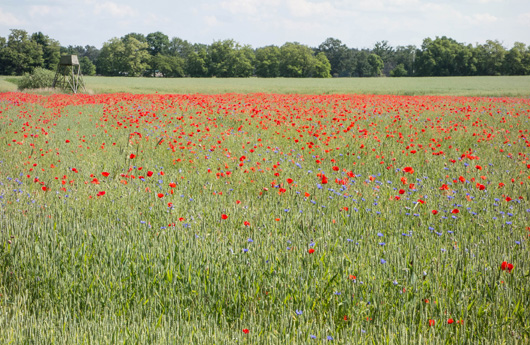
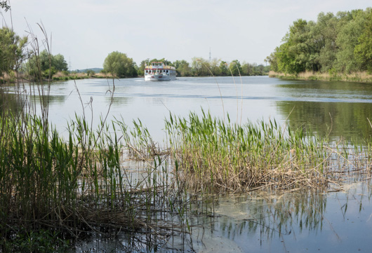
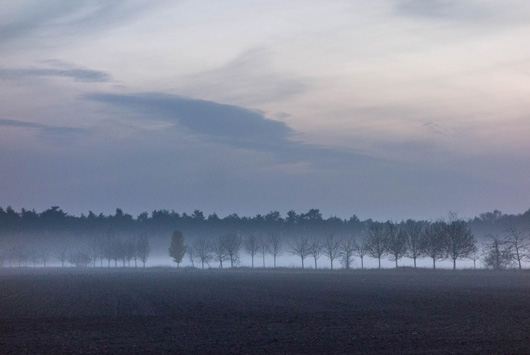
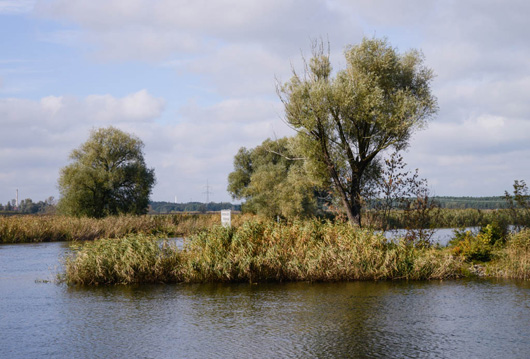
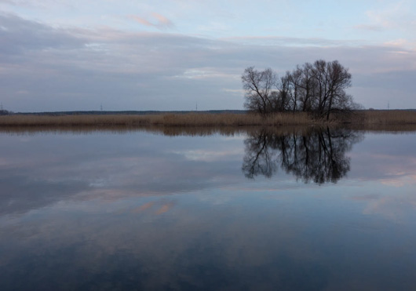

Das Westhavelland ist als Feuchtgebiet von internationaler Bedeutung ausgewiesen und ist als Naturschutzgebiet ausgezeichnet. Die Havel bildet das größte Biotopverbundsystem aquatischer Lebensräume in Brandenburg. Einen ebenfalls großen Teil nehmen Dünen und Sanderflächen ein. Im Naturpark finden sich über eintausend Tiere und Pflanzen, die vom Aussterben bedroht oder gefährdet sind. In den Feuchtgebieten rund um die Havel und ihrer Nebenflüsse bieten sich viele Rastmöglichkeiten für zahlreiche Zugvögelarten, sodass diese gut beobachtet werden können.
Der Naturpark Westhavelland hat 2014 die Auszeichnung zum ersten deutschen Sternenpark erhalten. Trotz der Nähe zu Berlin, sind aufgrund der dünnen Besiedelung der Region, die Nächte im Westhavelland so dunkel, dass sich viele Tausend Sterne und die Milchstraße als räumliches Gebilde erkennen und erleben lassen. Das Naturerlebnis eines natürlichen Sternenhimmels, was noch vor einigen Jahren Allgemeingut war, ist hier ganz ohne Technik erkennbar und für jeden tief beeindruckend.
Ein Tag auf dem Wasser...
Kanus, Flöße: Schloss Plaue
Kanuverleih: cafébar, Brandenburg a.d. Havel
Kanus etc.: Marina Schoners Wehr, Brandenburg a.d. Havel
Kanus, etc. : Buhnenhaus, Brandenburg a.d. Havel
Schiffsrundfahrten: Redereien in Brandenburg a. d. Havel
Bootstour mit der Havelnixe ab Bahnitz:
Fahrradverleih
Plaue: Fahrradfritze
Havelland Tourismus
Havelland Tourismus
Naturpark Westhavelland
Naturpark Informationszentrum in Milow
Havelradweg
Dark Sky Organisation
Ausflugstipps
Dom zu Brandenburg a. d. Havel
Archäologisches Landesmuseum in Brandenburg a. d. Havel, Paulikloster
Slavendorf in Brandenburg a. d. Havel
Industriemuseum in Brandenburg a. d Havel
Optikpark in Rathenow
Museum im Schloss Ribbeck
Otto Lilienthalzentrum in Stölln




 |